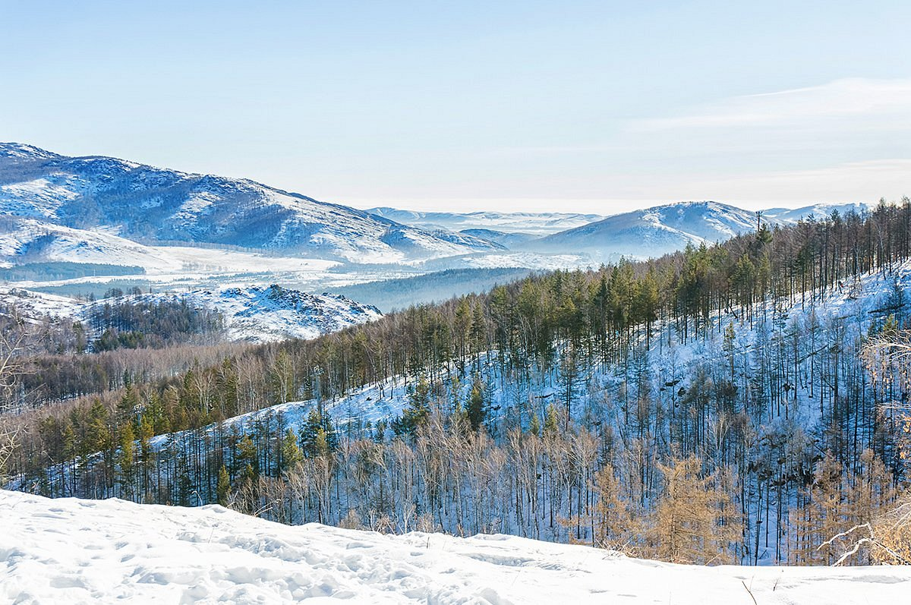
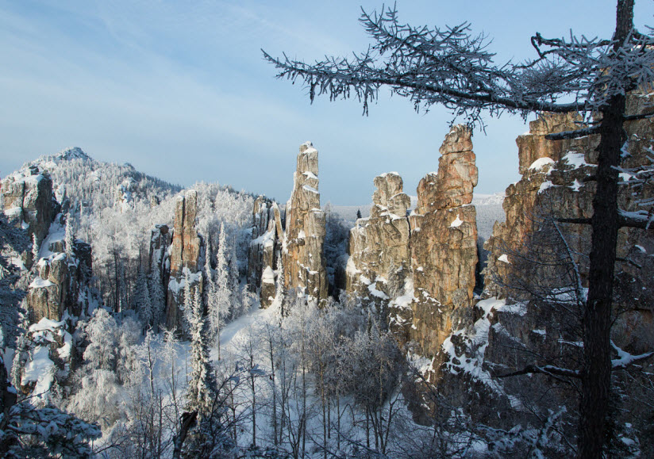
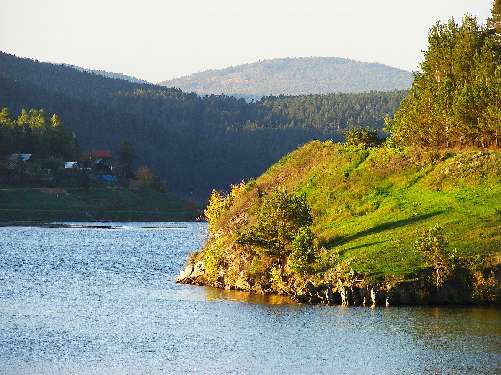
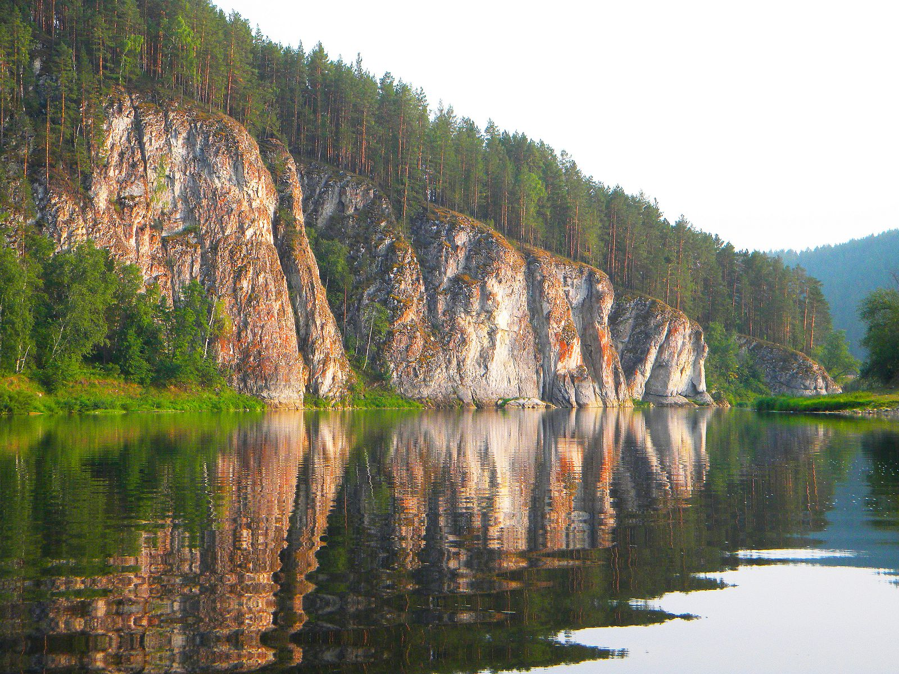

Белорецкий район
Жемчужина Уральских гор
Белорецкий район — один из самых живописных в Башкортостане. Здесь находятся высочайшие вершины Южного Урала, кристально чистые озера и густые хвойные леса. Это идеальное место для активного туризма, сплавов и треккинга.

Достопримечательность: Айгир
Урочище Айгир знаменито своими живописными скалами (Инзерские зубчатки). Это место притягивает туристов со всей России кристально чистой рекой Инзер, отвесными скалами и невероятными закатами. Идеальная точка для похода выходного дня.
Айгир — это не просто скалы, а настоящая «Мекка» для туристов Южного Урала. Здесь, на северном склоне хребта Караташ, возвышаются знаменитые «Зубы Шурале» (их также называют Орлиными скалами). С высоты около 689 метров открывается захватывающая панорама на изгиб реки Малый Инзер и окрестные горные хребты. Рядом с горой течёт одноимённый водопад, особенно красивый весной и летом. Место овеяно легендами: по одной из них, название происходит от башкирского «айғыр» — «жеребец». Сюда приезжают ради рассветов, фотосессий и треккинга — маршруты подходят как для новичков, так и для опытных путешественников.

Горнолыжный комплекс «Абзаково»
Один из самых современных курортов Башкортостана, расположенный у подножия хребта Крыкты-Тау. Зимой здесь катаются на лыжах и сноуборде, а летом — гуляют, отдыхают у воды и посещают аквапарк. «Уральская Швейцария» — так называют это место за красоту гор и высокий уровень сервиса.
Курорт «Абзаково» работает круглый год и предлагает 13 трасс общей протяжённостью около 18 км с перепадом высот до 320 метров. Трассы проходят через лесной массив, поэтому катание сопровождается потрясающими видами на горы. Для профессионалов подготовлены склоны, соответствующие стандартам FIS. Пять современных подъёмников доставляют на вершины до 5000 человек в час, а система искусственного заснеживания гарантирует стабильное покрытие. Помимо горнолыжного спорта, здесь есть аквапарк, спа-комплекс, зоопарк, хаски-город и развлекательный центр. Опытные инструкторы помогут новичкам, а пункты проката, кафе и медпункт работают прямо у подъёмников.

Инзерские зубчатки
Живописный горный хребет в междуречье Большого Инзера и Тирляна. Главная особенность — скальный цирк из причудливых скал-«зубцов» высотой до 35 метров. Пейзажи настолько необычны, что напоминают декорации к фильму «Аватар». Одно из самых красивых и загадочных мест Южного Урала.
Инзерские Зубчатки — это хребет протяжённостью около 8 км с максимальной высотой 1161 метр (гора Маяк). Туристы обычно посещают северную часть, где находится знаменитый скальный цирк: скалы причудливых форм встают по кругу, и некоторые из них настолько необычны, что кажутся рукотворными. С некоторых точек открывается вид на высшую точку Южного Урала — гору Ямантау (1640 м), а также на священную гору Иремель. Подъём к зубцам требует осторожности: тропа идёт через курумники, а на некоторые скалы можно забраться только с верёвкой. Особенно красиво здесь осенью, когда деревья одеваются в жёлто-багряные наряды. Путь к хребту начинается через кордон Миселя, где нужно перейти вброд холодную горную реку.
Галерея


